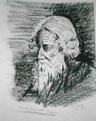

Jaffor Ullah's article page
Collection of essays
E-mail:
jhankar@bellsouth.net
 Recent Blog Articles of
Jaffor Ullah
Recent Blog Articles of
Jaffor Ullah 
Bangladesh
was made a paradox with the able hands of military, mullahs, and oligarchs
30 September, 2007
Why
conspiracy theorists like Abu Samara (আবু সামারাহ) are vocal now against
Mukto-mona writers? 28 September, 2007
Ayub
Khan, a quintessence of evil, chastised Bangalees in his second book
erroneously A.H. Jaffor Ullah 25 June, 2007
The
constitutionality of the interim government: is it legit or not? A.H. Jaffor
Ullah 1 May, 2007
Democracy
recalled by General Moeen 4 April, 2007
Letter
to Congressman 30 March, 2007
A
new fatwa against writer Taslima Nasrin! A.H. Jaffor Ullah 20 March,
2007
Top
guns of BNP and AL arrested as per the blueprint by Fakhruddin government
5 Feb, 2007
Two
death row inmates 25 Jan, 2007
Get
Rid of Crime Bosses 15 Jan, 2007
One
person roiling the entire nation through his antics! A.H. Jaffor Ullah
13 Jan, 2007
Iajuddin's
contribution to a looming political crisis in Bangladesh 12 December,
2006
Yajuddin
Ahmed as a caretaker chief – a bad news for Bangladesh 9
November, 2006
Going
forward a gridlock or compromise in Washington politics? 9 November,
2006
Khaleda
Zia's revenge 29 October, 2006
America's
Population 17 October, 2006
North
Korea's Nuclear Test 9 October, 2006
How
did Katrina change my life? 8 August, 2006
[5
years of Mukto-Mona ] After years of growing pain, the forum is in shipshape
condition to move forward
1.
Apologia:
Guess who called me today? 2.
The story
of M. A. Alim and Tayeb Husain
Earth Day 2006: Thoughts for a pristine
world in this millennium 22
April 2006
Kansat
Uprising: The first peasant revolution in Bangladesh in a long time
15
April 2006
They
paid the price of electricity with their blood 14 April 2006
How
did conniving Mullahs gain upper hand in Sonar Bangla? Apr 12, 2006
A
Botox therapy for Bangladesh? Apr 12, 2006
How
did Setara Hashem aka Mohiuddin get caught in the Internet again? 11
April, 2006
Would
the real Setara Hashem please stand up? 07 April 2006
A
befitting reply to a curmudgeon [Syed Aslam, Titu Ahmed, Quazi Azzizul Hoque
– all rolled into one person] 06 April, 2006
Obscurantist
par excellence Shamim rants in his obscure forum! 31 Mar, 2006
Thirty-five
long years ago 26 Mar, 2006
Poetics
of Jibanananda Das 21 Mar, 2006
Milosevic—the
butcher of the Balkans—dies at 64 17
Mar, 2006
The
mysterious financiers of JMB 07 Mar, 2006
The
nexus between the militant JMB leaders and Khaleda Zia government 06
Mar, 2006
Dick
Cheney's political life is in dire straits! 16 Feb, 2006
Shadabul
Mujib's execration against Hindus sans any factual basis 15 Jan., 2006
The
Partha saga re-lives through Yadav Das in Bangladesh 12 Dec., 2005
Propaganda
galore by Islamists masquerading as sages 06 Dec., 2005
Bangladesh:
A new wave of terrorism by Islamists rocks the nation 30 Nov, 2005
‘Intelligent
Design’ facing an uphill battle in Pennsylvania
Katrina
and a personal tragedy:
Back
to campus life after all these years!
Re:
[To Dr. Fazle Hussain] Dr. Jaffor Ullah's experience!
Katrina’s
curse!
An
update on Jaffor Ullah's post-Katrina situation
Jaffor Ullah sends his thanks and gratitude
Katrina and a personal tragedy from New Orleans Jaffor Ullah
[Response:
1 |
2 |
3 |
4 |
5 |
6 |
7 |
8 |
9 |
10]
Miscellaneous Articles:
Dhaka
is in disarray in the wake of 8/17 Islamic blitzkrieg
The
8/17 blitzkriegs by Islamists does not bode well for Bangladesh
Intelligence
dead wrong on Iraq, the U.S. presidential panel on WMD
The
first anniversary of the brutal attack on Humayun Azad
Remembering
this day - February 21, 1952 - after half a century
Iraqi
election nears but no guarantee of sharing power offered to Sunnis
Bush's
Darfur Dilemma
An
earnest appeal to Mukto-monas
In search of Arafat’s successor
How
did the Zionists get their land?
A
conspiracy theory making its round in Arab World over Arafat's death
US election 2004:
Why should Mukto-mona support the Kerry-Edwards ticket?
Senator Kerry’s defeat and take home
message for American liberals
Kerry probably will barely lose the election to Bush
Nail biting time has finally arrived
Election
Night projection: No flip-flop of states so far! Kerry fan: hang
in there!
Zogby
International poll predicts a big win for Kerry
Heavy minority voters’ turnout taking place; good news for Kerry-Edwards
ticket
Zogby's poll favors Kerry win but Florida is a must state for Democrat
Perhaps China sensed that Bush’s days are numbered!
Is
it possible to tie the U.S. electoral votes? What happens then?
Osama's message hits the hornet's nest 100 hours before the Election Day
A
light Kerry breeze blowing over the political landscape of America
Re: Bush will
win ? Think for a while ...
Is
Kerry-Edward Winning ?
The
dynamics of U.S. election brings a plethora of domestic issues
An
assessment: Who will be the winner? Bush or Kerry?
Analysis of
the third debate between Bush and Kerry
The Fight for
White House
Analysis of
the Bush-Kerry Second Debate
The Paul
Bremer Controversy will help Kerry in the upcoming election
Cheney-Edwards
debate: A solid performance by both
A Decisive
Victory for John Kerry
More
Articles:
 Social justice is
a core issue at Mukto-Mona
Social justice is
a core issue at Mukto-Mona
How to attain Nirvana in your lifetime?
A rich
tribute to a great filmmaker of Bangladesh
1. The Afghan
poll: What next? 2. The
Afghan election fiasco:
Women soccer
bout took place in Dhaka despite Islamists' noisy protest
Translation
of Jibanananda Das's poem - "ekti purono kobita"
1. My
rebuttal to Setara Hashem, the ultimate defender of Islam and Maxism 2. My
Bangla article on Ms. Setara Hashem,, a champion Marxist [Bangla]
The bizarre
tale of 8-21 judicial probe
Grenade
blasts at AL rally would further mar the smudged image of BD
Sudden demise
of an iconoclast whom I never met
Requiem for a
Romantic Rebel: Dr. Humayun Azad
When it comes to Evolution, Darwinism wins easily over 'Intelligent Design' theory
How dare the recalcitrant
mullahs offer their fatwa against three very bright professors of DU?
A quiet genocide in western Sudan is in the offing
Did Ronald Reagan really kill the Soviet Union?
1. Who
needs a 'Mullah Omar' to mete out street justice in Bangladesh? 2. Litany
of lies by Maulana Nizami before Secretary Christina Rocca
Sufi
shrine blast does not bode well for Islamized Bangladesh!
Litany
of lies by Maulana Nizami before Secretary Christina Rocca
Stop
Bangladesh’s retrogressive journey ushered in by obscurantists
Islamists
round the globe bemoan the fall of ‘Butcher of Baghdad’
Eid
Day blasts are symptomatic of Bangladesh’s highly polarized society
Image
of Early Islam
Biswa Ijtema
‘Cardiac Arrest’ —A new meaning of the old medical term in Bangladesh
Put the deadly genie back into bottle
before it is too late!
Makar Sankranti - an ingenious product of Hindu belief system!
Father of Pakistan’s Green Atomic bomb and his military aid in political hot water
Bangladesh über Alles
The tales from woebegone Bangladesh
On General Niazi’s departure to the other world- A Bengali perspective
The Portrait and
Poem of a Poets: By
Dr. A. H. Jaffor Ullah
|
 |
Rabindranath Thakur, the
celebrated Bengali poet, short-story writer,
song composer, playwright, essayist, and
painter who was awarded the Nobel Prize for
Literature in 1913. He introduced new prose
and verse forms and the use of colloquial
language into Bengali literature, thereby
freeing it from traditional models based on
classical Sanskrit. He was highly influential
in introducing the best of Indian culture to
the West and vice .... (Read
more)
|
Those Alluring
Poems of Jibanananda Das : By
A.H. Jaffor Ullah
|
|
Poems of Jibanananda Das have
special meaning to all of us who are living in
an alien land faraway removed from Bengal. The
sensation that I get reading poems from Ruposhi
bangla or Bonolata Sen cannot so
easily be described through writing alone. How
one could possibly describe his or her mood or
emotion? As I am gracefully growing older,
Jibanananda Das's poems are creeping into my
mind. The joy that I get upon reading his
fascinating poems ... ... ....(Read
more) |
Gulistan in my mind: Part
One; Part
Two; Part
Three; Part
Four
Hindu Belief System: Pictures worth a thousand words: Part
One; Part
Two
Breakfast at Cafe
Chernobyl
A Bevy of Burqa-clad Women's foray into Ijtema ground
Dhaka's Ubiquitous Islamic
Sculptures
The Dhaka Diary - Part
One: Dhaka's Monsoon Foliage
The Dhaka Diary - Part
Two: Dhaka's Colorful Rickshas
The Dhaka Diary - Part
Three: A trip to NFB office & Attending a Milad
The Dhaka Diary - Part
Four:The tale of Driver Sahib and more...
The Dhaka Diary - Part
Five: Frolicking in Monsoon Days!
The Dhaka Diary - Part
Six: Dhaka's massive traffic jam
The Dhaka Diary - Part
Seven: Dhaka marching to Modernity!
The Dhaka Diary - Part
Eight: The itinerant musician of Dhaka
The Dhaka Diary - Part
Nine: Portrait of a true Mukti Bahini soldier
The Dhaka Diary - Part
Ten: A Visit to Dhaka's Muktijuddha Jadughar
The Dhaka Diary - Part
Eleven: A Visit to DRIK Art Gallery
The Dhaka Diary - Part
Twelve: How to get halal meat without ever sweating!
The Dhaka Diary - Part
Thirteen: Our night out in Gulshan!
The Story of Sam - A
Persistent Howler
Ramna Botomul Revisited a
year later
Global migration of families
from my perspective
Bangla
Articles:


|